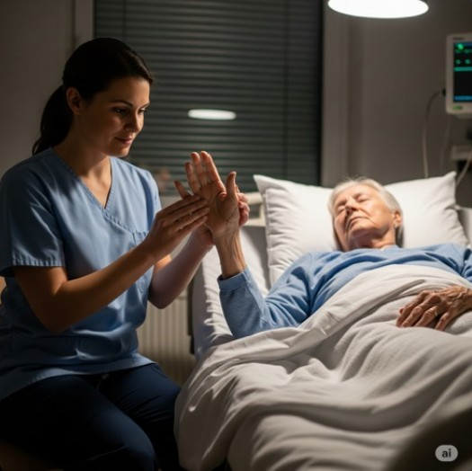
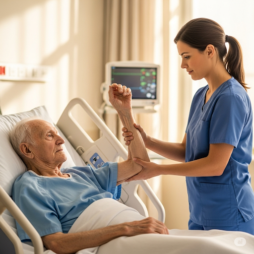
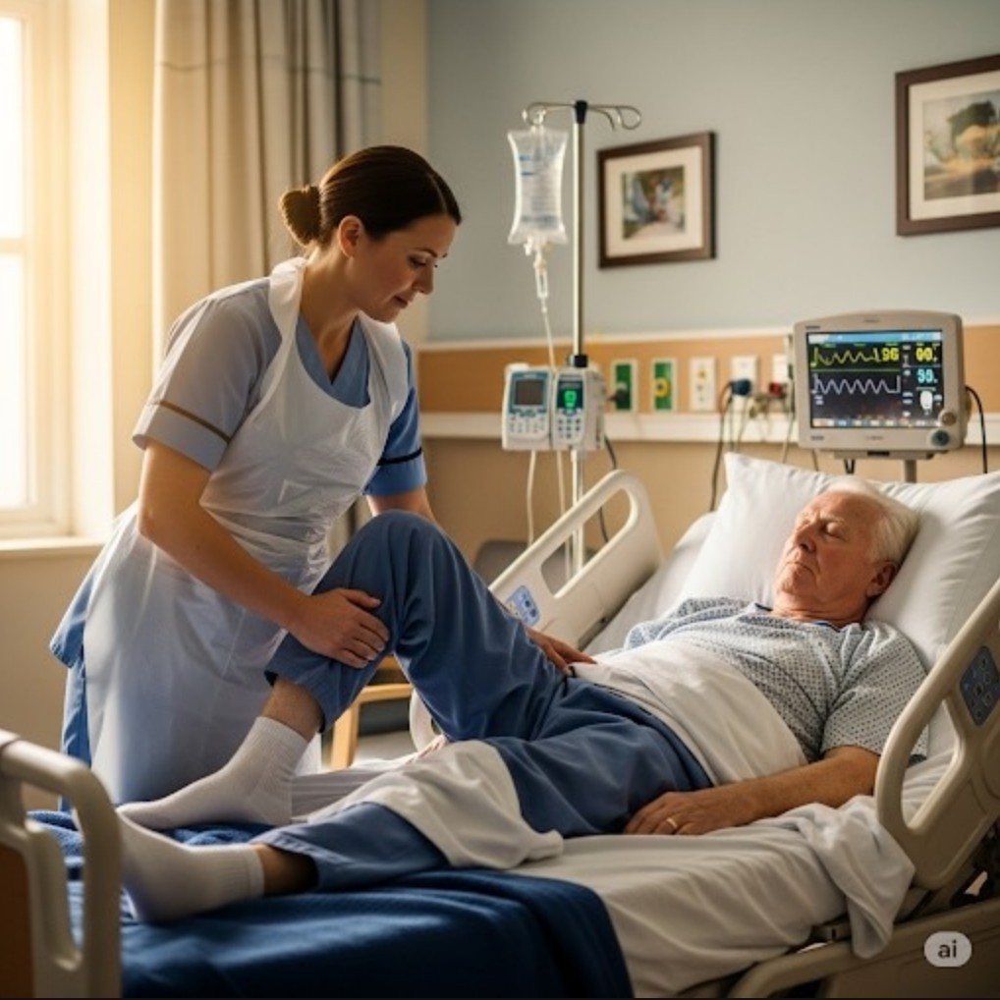
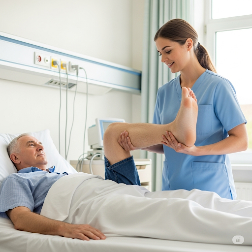
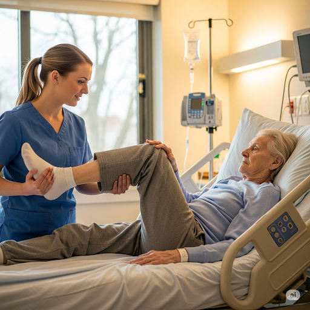
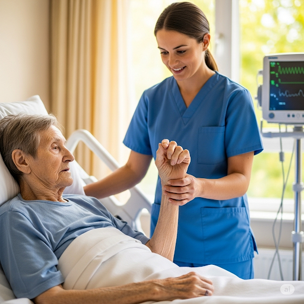

10 ท่าวิธีกายภาพบําบัดผู้ป่วยติดเตียง
หรือผู้สูงอายุที่ติดเตียง
1.ท่าผ่อนคลายฝ่ามือ
ใช้มือจับนิ้วทั้ง 4 นิ้วของผู้สูงอายุ
ได้แก่ นิ้วชี้ นิ้วกลาง
นิ้วนาง นิ้วก้อย
จากนั้นเหยียดให้ตรงและใช้มืออีกข้าง
กางนิ้วโป้งของผู้สูงอายุออก เเล้วนับ 1-20
ท่านี้ช่วยเพิ่มกำลังของกล้ามเนื้อฝ่ามือ
และทำให้ผู้สูงอายุผ่อนคลายมากขึ้น

2.ท่ากางนิ้ว
กางนิ้วมือของผู้สูงอายุแต่ละนิ้วออกเเล้วนับ 1-20
ทำให้ครบทุกนิ้วและทำทั้ง 2 ข้าง
ทั้งนิ้วมือข้างซ้ายและนิ้วมือข้างขวา
ท่านี้ไม่ยากเลยแต่เน้นความสม่ำเสมอ ช่วยเพิ่มความยืดหยุ่นของมือ
เเละป้องกันการหดเกร็งขอกล้ามเนื้อและข้อต่อ
3.ท่าวาดแขนออกด้านข้าง
ผู้ดูแลใช้มือจับที่ข้อศอกและข้อมือของผู้สูงอายุ
หลังจากนั้นหมุนไปเหนือศีรษะ ค้างไว้ 20 วินาที
และหมุนแขนลง โดยท่านี้จะช่วยบริหารหัวไหล่
4.ท่าพับข้อศอก
ผู้ดูแลใช้มือจับที่ข้อมือของผู้สูงอายุ และข้อศอก
จากนั้นพับเข้าหาตัวผู้สูงอายุค้างไว้
นับ 1-20 และคลายแขนออก

5.ท่าบริหารสะโพกและขา
จับใต้ข้อพับและบริเวณส้นเท้าของผู้สูงอายุ
หลังจากนั้นให้กางขาผู้สูงอายุออก ประมาณ 45 องศา
เสร็จแล้วค่อยๆหุบขาเข้า เเล้วให้ทำซ้ำเป็นจังหวะ

6.ท่าบริหารข้อเท้า
ผู้ดูแลจับหน้าแข้งของผู้สูงอายุ
เเล้วอีกมือหนึ่งจับที่ฝ่าเท้าของผู้สูงอายุไว้
จากนั้นให้ดันฝ่าเท้าของผู้สูงอายุกระดกขึ้นเข้าหาตัว
และให้เอามือดันฝ่าเท้าผู้สูงอายุลง เหมือนเป็นการถีบปลายเท้า

7.ท่าหมุนลำตัว
ให้ผู้สูงอายุนอนหงายชันเข่าทั้งสองข้าง
จากนั้นค่อยๆหมุนเข่าทั้งสองข้างพร้อมกัน
ให้ไปแตะเตียงทางด้านซ้าย และหมุนไปแตะเตียงทางด้านขวา
ทำซ้ำประมาณ 20 รอบ
หากผู้ป่วยไม่สามารถชันขาข้างที่อ่อนแรงได้
ผู้ดูแลควรช่วยประคองเข่าและจับเท้าติดกับเตียงไว้
8. ท่างอเข่าและสะโพก
ให้ผู้สูงอายุนอนหงาย งอเข่าและสะโพกเข้าชิดอก
จากนั้นค่อยๆเหยียดออก พยายามให้หัวเข่าตั้งตรงไว้
หากผู้สูงอายุไม่สามารถควบคุมการเคลื่อนไหวได้
ผู้ดูแลควรช่วยโดยการประคองเท้า ท่านี้ทำซ้ำ 20 รอบ

9.ท่าเอื้อมมือ
ให้ผู้สูงอายุนอนหงาย และยกแขนขึ้นตั้งฉากกับพื้น
จากนั้นเอื้อมมือให้สูง ให้ทำซ้ำข้างละประมาณ 10 รอบ
ท่านี้ช่วยยืดหยุ่นและเพิ่มความแข็งแรงให้กับกล้ามเนื้อ
10.ท่ากำมือและแบมือ
ให้ผู้สูงอายุนอนหงาย กำมือและแบมือ
หากผู้สูงอายุไม่สามารถควบคุมการเคลื่อนไหวได้
ผู้ดูแลต้องช่วยประคองที่ข้อมือและนิ้วมือ
โดยทำซ้ำ 20 รอบ ทั้งมือด้านซ้ายและด้านขวา
สำหรับการป้องกันแผลกดทับ
ผู้ดูแลควรพลิกตัวผู้สูงอายุในทุกๆ 1-2 ชั่วโมง
หรือให้ผู้สูงอายุนอนบนที่นอนเพื่อป้องกันแผลกดทับ

การทำกายภาพบำบัดให้กับผู้ป่วยติดเตียง
นอกจากจะเป็นการฟื้นฟูสภาพร่างกายแล้ว
ยังช่วยฟื้นฟูสภาพจิตใจของผู้ป่วยอีกด้วย
อย่างไรก็ตาม ในการทํากายภาพบําบัด
หากผู้ป่วยนอนบนเตียงที่ปรับระดับได้
ก็จะยิ่งอำนวยความสะดวกให้กับผู้ดูแล
เเละช่วยให้ทำกายภาพบำบัดง่ายขึ้น